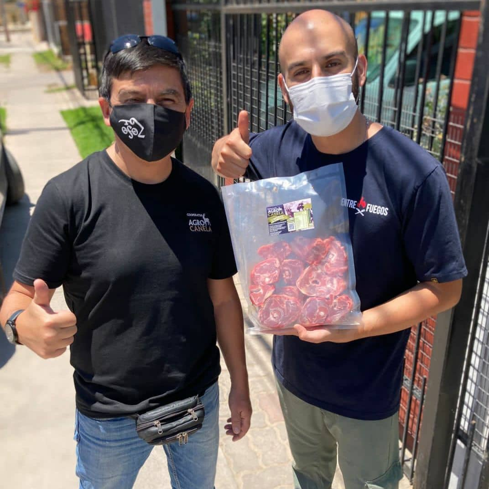

La diversificación de los productos cárnicos y el alto estándar de seguridad en su fabricación han sido piezas claves para que las empresas se inclinen por fabricantes de la región.

Carne de cabrito, leche, queso y otros derivados caprinos forman parte de la identidad gastronómica y cultural de la Región de Coquimbo. Es por que la Cooperativa Agrícola Agropecuaria Canela, más conocida como AgroCanela, ha trabajado por dar a conocer sus productos cárnicos, con una amplia gama de cortes en formato de un kilo y sellados al vacío. Pierna, chuleta, paleta, osobuco, malaya o interiores son algunos de los cortes pensados en las preparaciones para restaurantes y eventos gastronómicos que podrán contar con un producto de alta calidad y con importantes valores nutricionales.
Víctor Gutiérrez, gerente de AgroCanela, indicó que «actualmente, el proceso de faena lo estamos realizando en la fábrica de carnes Catahueche, que nos prestan el servicio, ya que cuentan con todos los permisos y resoluciones sanitarias necesarias para asegurar la inocuidad del producto. Sin embargo, estamos postulando a un proyecto para una sala de procesos que nos permitirá realizar la faena y el envasado nosotros mismos».
Actualmente, su principal mercado son los restaurantes, chefs y eventos que han querido incorporar la carne caprina a sus preparaciones, con el fin de nutrir su oferta gastronómica con productos propios de la Región de Coquimbo.
Una muestra de aquello es la Fuente Toscana, un restaurante ubicado en Independencia 146, Ovalle. Su fundador, Juan José Juliá, señaló que «nuestro restaurante ofrece una mixtura entre la comida española, italiana y el campo chileno, por ende, es importante para nosotros trabajar con productos de la zona. Estamos en una búsqueda constante por este tipo de productos y con AgroCanela pudimos encontrar la seguridad, la disponibilidad y la calidad de un buen producto cárnico para nuestra carta».
Carolina Aranda, fundadora de la Boutique de Carnes ProCarne, ubicada en el Stip Center El Milagro, argumentó que «es importante para nosotros poder ofrecer un producto propio de nuestra región y que sea sano, lo más natural posible, con la menos intervención de químicos y ese tipo de cosas. En este sentido, lo que está haciendo AgroCanela es muy importante, concentrando a los productores y sacando adelante un producto de gran calidad y con buena disponibilidad, en el contexto de sequía en que nos encontramos».
Finalmente, el chef argentino radicado en La Serena, Abel Dip, quien se dedica a los eventos gastronómicos, especializándose en la parrilla, ha podido comprobar la calidad de los productos, tras una alianza con AgroCanela. «Muchas veces las personas creen que para comprar cabrito hay que comprarlo entero, pero las empresas como AgroCanela han demostrado que el producto está a un alto nivel, con diferentes formatos y con toda la seguridad de fabricación. La carne de cabrito es un producto muy noble, rico, saludable y con muchas preparaciones. Además, en AgroCanela trabajan un producto fresco, con animales criados de forma natural, bien alimentados y muy alejados de todos los preservantes y químicos que se ven en otros tipos de carne», afirmó.
Para quien requiera más información sobre AgroCanela, puede contarlos a través del número telefónico +56935115105 o en sus redes sociales, en Instagram y Facebook.
Durante su desarrollo empresarial, la Cooperativa AgroCanela ha sido apoyada de diversas maneras por el Programa Transforma Caprino, quienes se dedican a fortalecer la cadena de valor de los productos caprinos, enfocándose en comunas como Canela, Monte Patria, Punitaqui, Combarbalá, entre otras. Para más información, es posible visitar sus redes sociales, en Instagram y Facebook. El programa es una iniciativa de Corfo y es financiado por el Gobierno Regional, a través del Programa de Gestión Territorial de Zonas Rezagadas.